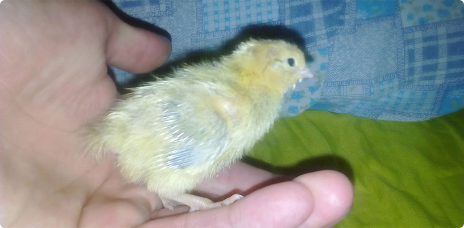
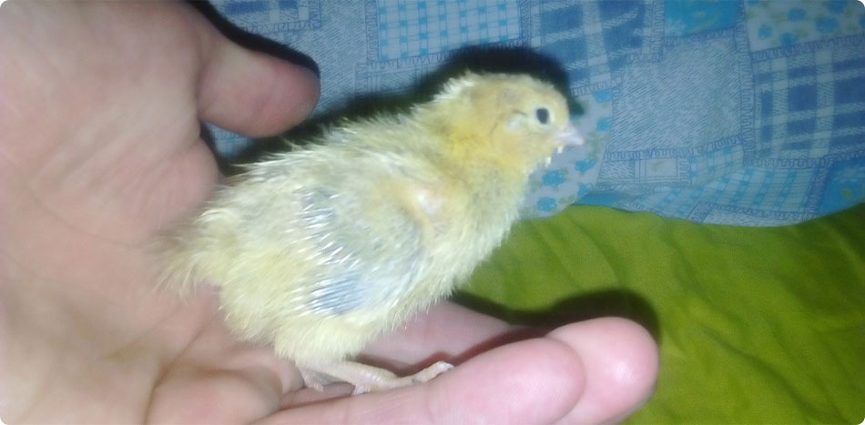
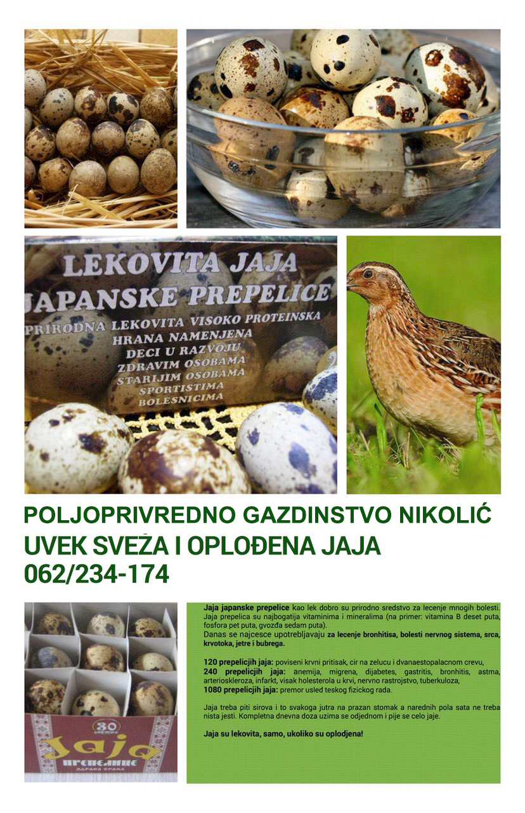

Japanske prepelice

Japanska prepelica pripada porodici fazana ili pravih koka, redu kokoške. Njena postojbina je Japan i najrasprostranjenija je vrsta prepelice.
Koka japanske prepelice je izvanredan proizvođač jaja i pretvarač biljne hrane u životinjski proizvod tj. jaje, visoke biološke vrednosti. U mnogim zemljama sveta japanska prepelica se gaji radi dobijanja,pre svega,njihovih dragocenih i lekovitih jaja, kao i mesa koje ima ukus divljači sa vrlo niskim sadržajem holesterola.
Analizama je dokazano da jedno jaje japanske prepelice u odnosu na kokošije,ima pet puta više fosfora, sedam puta vuše gvožđa i oko deset puta više vitamina B-kompleksa. Jaja japanske prepelice veoma povoljno deluju na naš centralni nervni sistem, srce, krvne sudove i metabolizam.Zahvaljujući ovom najvećem daru koji nam je Priroda dala,jaja japanske prepelice su se pokazala kao veoma uspešno pomoćno-Prirodno lekovito sredstvo u lečenju nekih bolesti a pre svega:
- anemije
- astme
- holesterol
- hipertencija-poviseni krvni pritisak
- slab imunološki sistem
Dragoceni sastojak u jajetu japanske prepelice je enzimi. Jaja i meso japanske prepelice su veoma korisni za razvoj dece.

Nauka je dokazala da su lekovita isključivo oplođena jaja. Meso japanske prepelice preporučuje se trudnicama i deci zbog visokog sadržaja belančevina i vitamina! Naučnici iz nekoliko zemalja, koji proučavaju ovu "zlatnu" pticu, konstatovali su njenu otpornost prema mnogim bolestima. Zahvaljujući tome, embrion prepelice se koristi kao sirovina u bio-industriji. Oplemenjenost ćelija prepeličijeg grudnog koša pogodna je za proizvodnju vakcine protiv živih virusa. To je dalo osnova za korišćenje prepelice pri spravljanju vakcina protiv besnila, kuge, boginja i drugih bolesti.
Pretežno se bavimo prodajom jaja, ali imamo i piliće u sezoni leženja i mlade prepelice pred pronošenjem. Posebno smo ponosni na nasa domaća rezanca za supu od prepeličijih jaja, koja pravimo po bakinom receptu bez daodavanja vode, u stvari to uglavnom baka i pravi, a mi smo tu da okrećemo ručicu na mašinici za rezanca.